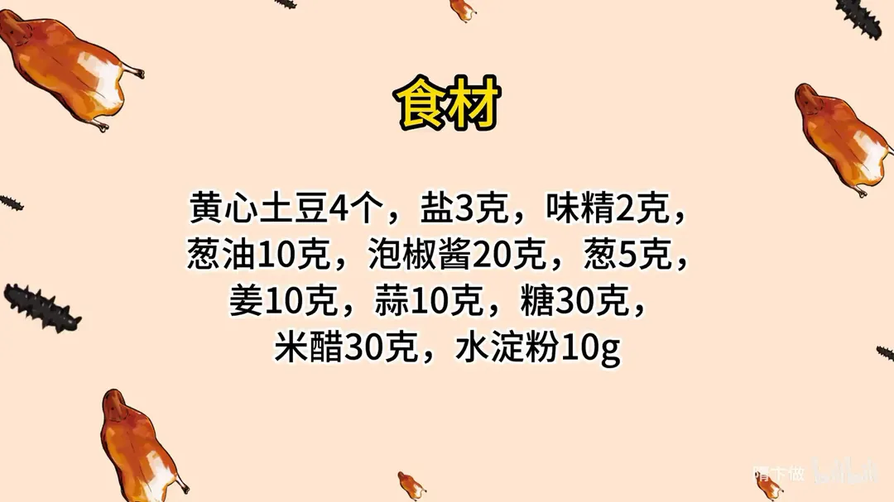
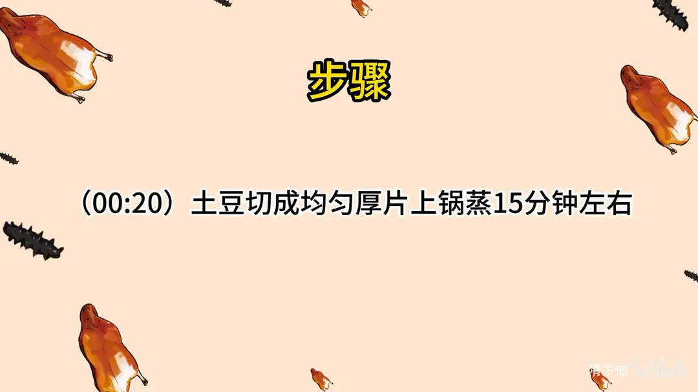
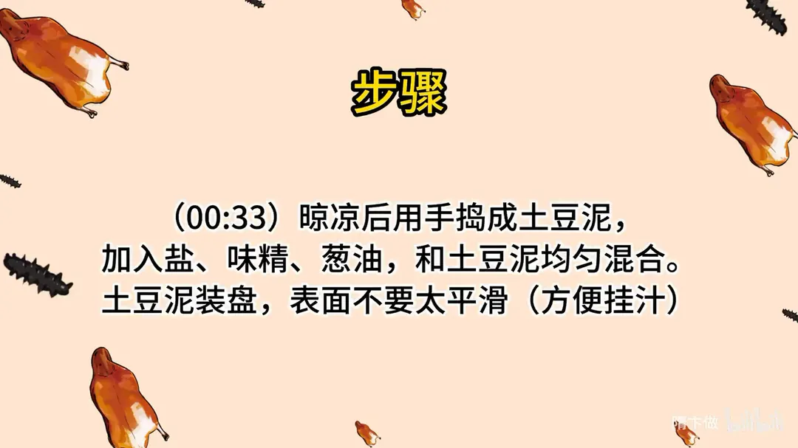
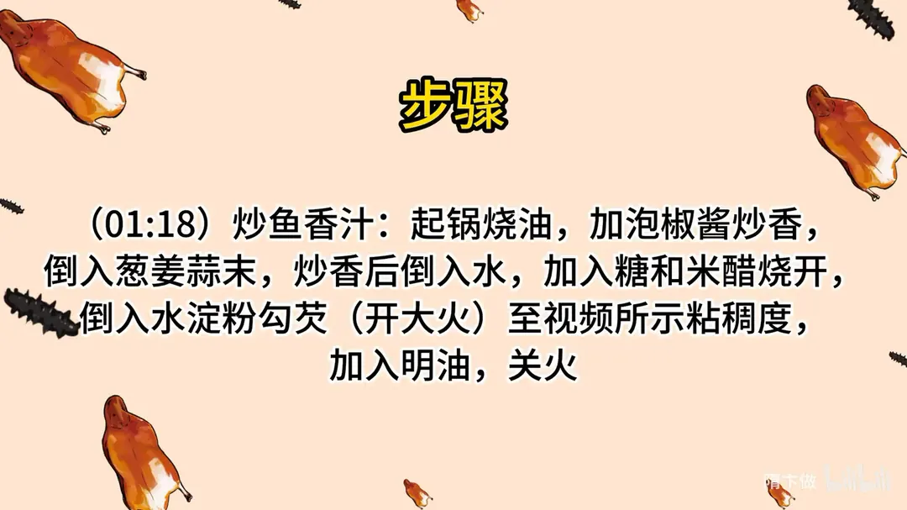
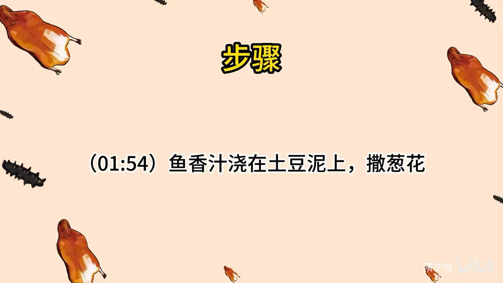
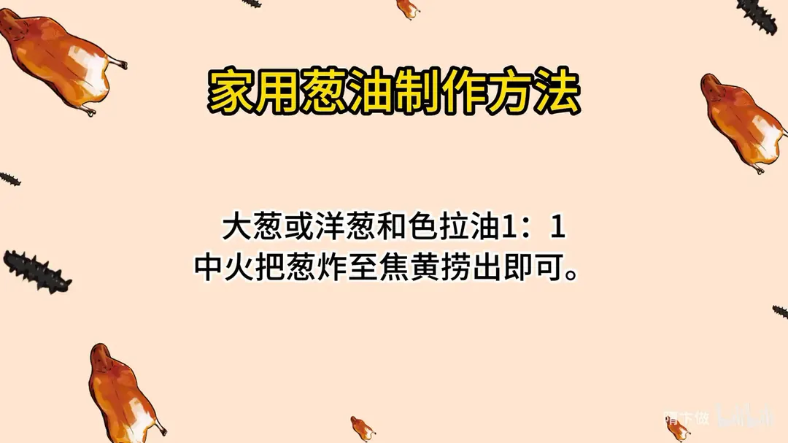

鱼香土豆泥
隋卞一做。黄心土豆 4 个切厚片蒸 15 分钟，晾凉后用手捣成泥，拌入盐 3 克、味精 2 克、葱油 10 克，装盘时故意留粗糙面才挂得住汁。鱼香汁用泡椒酱 20 克、糖 30 克、米醋 30 克，糖醋 1:1，大火勾芡后淋明油。
原视频：https://www.bilibili.com/video/BV1MN411u7n7
食材
黄心土豆、泡椒酱、米醋 等 11 样
| 类别 | 用料 | 用量 |
|---|---|---|
| 主料 | 黄心土豆 | 4 个 |
| 调料 | 盐 | 3克 |
| 调料 | 味精 | 2克 |
| 调料 | 葱油 | 10克 |
| 鱼香汁 | 泡椒酱 | 20克 |
| 鱼香汁 | 葱 | 5克 |
| 鱼香汁 | 姜 | 10克 |
| 鱼香汁 | 蒜 | 10克 |
| 鱼香汁 | 糖 | 30克 |
| 鱼香汁 | 米醋 | 30克 |
| 鱼香汁 | 水淀粉 | 10g |
步骤
- 蒸土豆：土豆切成均匀的厚片，上锅蒸 15 分钟左右，蒸到能轻松扎透。
- 捣泥调味：晾凉后用手捣成土豆泥，加入盐、味精、葱油，和土豆泥均匀混合。土豆泥装盘，表面不要太平滑，方便挂汁。
- 炒鱼香汁：起锅烧油，加泡椒酱炒香，倒入葱姜蒜末，炒香后倒入水，加入糖和米醋烧开；倒入水淀粉勾芡（开大火），至粘稠，加入明油，关火。
- 浇汁：鱼香汁浇在土豆泥上，撒葱花。
小贴士
- 家用葱油：大葱或洋葱和色拉油 1:1，中火把葱炸至焦黄捞出即可。
讲解要点
难度：★☆☆☆☆（几乎零失败，唯一要练的是鱼香汁的糖醋比和勾芡浓度）
为什么这么做
- 选黄心土豆、切均匀的厚片：黄心土豆沙糯、水分少，蒸出来才绵；片切得匀才能一块蒸透。
- 蒸 15 分钟左右、能轻松扎透，再晾到温热：没蒸透的土豆捣不烂，会有硬芯；刚出锅太烫、凉透又发硬，温热时最好捣。
- 不用捣得很细，故意留粗糙面：抹得太光滑，汁会顺着滑下去；像沙土豆那样坑坑洼洼，汁才扒得住。
- 盐、味精、葱油先拌进土豆泥：土豆本身味淡，葱油是这道菜的香气底，拌在泥里比浇在面上更匀。
- 泡椒酱先炒香，再下葱姜蒜：泡椒的酸香要过油才出得来，直接加水就是生辣味。
- 糖和米醋 1:1：鱼香是小甜酸，等量才平衡，醋多就尖、糖多就腻。
- 勾芡后立刻开大火、出锅淋明油：大火芡才亮、才稠得匀，小火芡发白发澥；明油让芡汁发亮、不粘盘。
容易翻车
- 土豆没蒸透，捣出来有硬块。
- 装盘抹得太光滑，汁全滑到盘底。
- 勾芡时火小，芡澥掉、发白。
- 醋放多了发冲，糖醋不是 1:1 就不像鱼香。
- 泡椒酱没炒透，汁里有生辣味。
原片尾卡






原片文案
AI 字幕校准稿
你们看封面肯定觉得这个菜特别网红，其实这个是存在几十年的老菜，但是呢全网没人做过，那隋老师就得出手了——鱼香土豆泥。
需要准备的材料特别简单，就是几个土豆。用黄心的土豆，把皮削了，切成厚片，切得均匀点，能统一一块熟，然后搁锅里蒸上，15 分钟左右就行。
到时间了，拿筷子一按就开了，已经熟了。倒盆里边，把土豆抓成泥。不着急吃，稍微晾一晾，不用很细。
咱们还要给它调个味，来点盐、味精，然后来点葱油，增加点香味，葱油的做法给你们放片尾。可以了。然后把它铺到盘里边，上面不用弄得很光滑——特别光滑之后一会儿不好挂汁，上面就像那个沙土豆似的，有点坑坑洼洼的感觉。
现在我们开始炒鱼香汁。起锅烧油，下泡椒酱把它炒香，加入葱姜蒜末，炒出香味，加上水，放糖、米醋，把锅烧开，定个味。
好了，勾芡。把淀粉倒进去之后就要开大火，这个粘稠度就可以了，来点明油，出锅，浇在土豆泥上，撒点葱花。
放在刚出锅的热米饭上。好好吃啊。就等于说是用鱼香肉丝那个汁拌的饭，同时还有土豆泥拌饭，土豆的那种香糯，其实味道大家都能想象得到，但我没想象到竟然能这么融合。
我想象的它可能会稍微有点黑暗料理，但没想到还挺好吃的。而且这个菜很简单，真简单，在家试一试吧。今天先这样，拜拜。